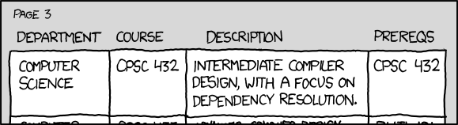

So far, we’ve explored 3 types of relationships: composition, aggregation, and association. We’ve saved the simplest one for last: dependencies.
In casual conversation, we use the term dependency to indicate that an object is reliant upon another object for a given task. For example, if you break your foot, you are dependent on crutches to get around (but not otherwise). Flowers are dependent upon bees to pollinate them, in order to grow fruit or propagate (but not otherwise).
A dependency occurs when one object invokes another object’s functionality in order to accomplish some specific task. This is a weaker relationship than an association, but still, any change to object being depended upon may break functionality in the (dependent) caller. A dependency is always a unidirectional relationship.
A good example of a dependency that you’ve already seen many times is std::ostream. Our classes that use std::ostream use it in order to accomplish the task of printing something to the console, but not otherwise.
For example:
#include <iostream>
class Point
{
private:
double m_x{};
double m_y{};
double m_z{};
public:
Point(double x=0.0, double y=0.0, double z=0.0): m_x{x}, m_y{y}, m_z{z}
{
}
friend std::ostream& operator<< (std::ostream& out, const Point& point); // Point has a dependency on std::ostream here
};
std::ostream& operator<< (std::ostream& out, const Point& point)
{
// Since operator<< is a friend of the Point class, we can access Point's members directly.
out << "Point(" << point.m_x << ", " << point.m_y << ", " << point.m_z << ')';
return out;
}
int main()
{
Point point1 { 2.0, 3.0, 4.0 };
std::cout << point1; // the program has a dependency on std::cout here
return 0;
}In the above code, Point isn’t directly related to std::ostream, but it has a dependency on std::ostream since operator<< uses std::ostream to print the Point to the console.
Dependencies vs Association in C++
There’s typically some confusion about what differentiates a dependency from an association.
In C++, associations are a relationship where one class keeps a direct or indirect “link” to the associated class as a member. For example, a Doctor class has an array of pointers to its Patients as a member. You can always ask the Doctor who its patients are. The Driver class holds the id of the Car the driver object owns as an integer member. The Driver always knows what Car is associated with it.
Dependencies typically are not members. Rather, the object being depended on is typically instantiated as needed (like opening a file to write data to), or passed into a function as a parameter (like std::ostream in the overloaded operator<< above).
Humor break
Dependencies (courtesy of our friends at xkcd):

Of course, you and I know that this is actually a reflexive association!